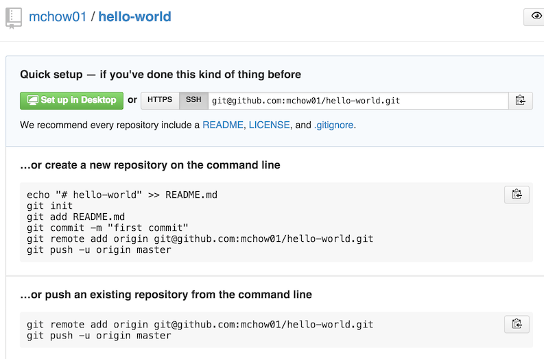

Lab Objective
- Practice using Git and GitHub
Instructions
Please read the following instructions first, carefully!
- Create a GitHub account if you do not have one already at https://github.com/.
- Read https://help.github.com/articles/set-up-git on setting up Git on your computer. Important Note 1: I DO NOT RECOMMEND using the native app provided by GitHub (e.g., GitHub for Mac). It isn't as flexible as using the command line and you might as well get into the habit of typing and using the command line terminal. Important Note 2: If you are using a Mac, I strongly recommend that you follow the Generating SSH Keys instructions. In the past, students have had lots of trouble using
git credential-osxkeychain. - Read https://help.github.com/articles/creating-a-new-repository/ on creating a Git repository on GitHub. Please name this new repository
hello-worldunder your account! - Upon creating the
hello-worldrepository under your account in GitHub, you will see a page that looks something like the following (with the exception of themchow01which is my GitHub username).  - On your computer using the terminal / command line, create a new directory (a.k.a., folder) named
hello-worldviamkdir hello-world. This directory can be located anywhere on your computer. Then go into the directory viacd hello-world. - In the
hello-worlddirectory, follow the instructions as noted on the GitHub page (or screenshot above):echo "# hello-world" >> README.md git init git add README.md git commit -m "first commit" git remote add origin git@github.com:your_github_username_here/hello-world.git git push -u origin master
- Make a second commit change. That is: find a funny image (e.g., using Google), add it to your
hello-worldrepo, commit and push change to GitHub. Please also write short, one line, coherent commit messages (i.e., no "dr. steve brule" or "asdf" garbage). Important Note 3: Please do not use photos of other students, me, or the TAs. That is just downright creepy.
Readings, References, and Tutorials
Assessment
This lab is worth 2 points.
- (0.5 point) Successfully created the
hello-worldrepo - (1 point) Successfully added, commited, and pushed a funny image to
hello-worldrepo - (0.5 point) Wrote short, one line, and coherent commit messages